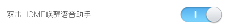
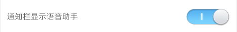
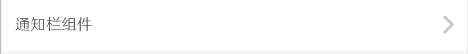
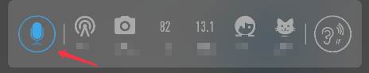
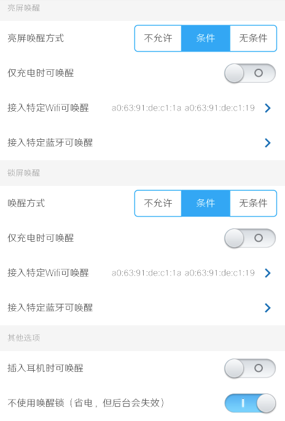
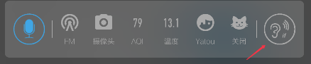
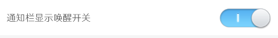

语音控制说明
l 进入控制
有三种途径可以进入语音控制状态：
l 双击HOME键进入
只需要在设置中开启“双击HOME唤醒语音控制即可”：

然后按照想到开启对应的权限后，在任意应用程序界面，双击HOME键即可拉起语音控制面板。
l 通知栏图标进入
1、 在设置中开启“通知栏显示语音助手”：

2、 在设置的“通知栏组件”中至少配置一个通知栏显示的设备：

3、 下拉通知栏，即可发现语音助手按钮：

l 命令词唤醒
命令词唤醒是指通过“贝壳贝壳”或者“你好贝壳”呼出语音控制助手。
首先，可以配置亮屏和熄屏下的唤醒条件

针对亮屏和熄屏两种情况下，均支持三种唤醒是否开启的条件：
l 不允许：指此模式下关闭命令词唤醒；
l 条件：指此模式下，将按照是否充电、是否连接到特定WIFI或者蓝牙（是指连接到蓝牙，仅仅是找到蓝牙是没用的）时可命令词唤醒；
l 无条件：指此模式下，无论如何都会开启命令词唤醒。
然后有两个辅助选项：
l 插入耳机时可唤醒：只当手机连接到有线耳机或者蓝牙耳机时可使用命令词唤醒；
l 不使用唤醒锁：正常情况下，Android进入锁屏后会很快进入休眠状态，从而无法再使用命令词唤醒，因此默认情况下当因为条件或者无条件开启锁屏唤醒后，APP会使用唤醒锁保证手机不会进入休眠（会很耗电）；而当开启该选项后，则不会启动唤醒锁，APP只会伴随其他具有唤醒锁的APP（比如音乐播放器）的存活而存活。
特别说明：当APP处于命令词唤醒模式时，将会独占麦克风，这时候手机将无法使用录像、微信语音视频通话等软件中需要录音的功能。这种情况下，可通过点击通知栏图标

来临时关闭命令词唤醒。
该图标显示需要开启设置中的配置项：

图标有三种状态：
l ：带if字样，当前状态将使用设置中的亮屏唤醒和锁屏唤醒来决定当前是否开启命令词唤醒；
l ：强制开始命令词唤醒，无论当前处于设置中的何种状态，强制开启命令词唤醒；
l ：强制关闭命令词唤醒。
l 唤醒命令词：
APP提供两个命令词：
l 贝壳贝壳：当使用该命令词时，说出命令词后立即直接说出命令，比如“贝壳贝壳帮我打开客厅的电视”，中间无需等待；
l 你好贝壳：当时用该命令词时，说出命令词后，请先等待APP给出反馈，比如“在呢”，之后在“嘀”声后再继续说出命令词，比如：“贝壳贝壳（APP反馈：在呢，嘀）打开客厅的电视”。
l 语音指令：
本APP目前支持如下指令：
l （打开|关闭|停止|开|关|切换|执行|调用）（面板名称）的（面板元素）
l （打开|关闭|停止|开|关|切换|执行|调用）（面板元素）
上述两组指令对开关、空调、窗帘、脚本等有效，举例：
n （贝壳贝壳帮我）打开客厅的窗帘
n （你好贝壳）[等待反馈]打开饮水机
n （贝壳贝壳）关闭书房的打印机
n （贝壳贝壳）执行鱼缸清洗
l （查询|报告）（面板名称）的（面板元素）
l （面板元素）（在哪儿|在家吗|怎么样）
上述三组指令对所有可以查询状态的元素有效，举例：
n （贝壳贝壳帮我）查询当前室外天气
n （你好贝壳）[等待反馈]当前实时天气怎么样
n （贝壳贝壳）小朋友现在在哪儿
n （贝壳贝壳）客厅的吸顶灯开着吗
n （贝壳贝壳）报告客厅的吸顶灯状态
注：查询时尽可能少使用开着吗关了吗这两个匹配模式，容易和前一组指令中的开和关混淆。
l 音量太大了/音量太小了
l 音量大一点/音量小一点
l 音量80/音量百分之八十
上述指令模板对手机音量进行控制（然而并没有什么用）
l 运行（手机上的应用名称）
当在设置中开启了“允许语音打开APP”后，可以使用该指令启动手机APP（优先级高于前面第一组对智能家居的控制）。
嗯哼，现在就试试：贝壳贝壳，
立即呼叫来自#41981星球的贝壳！